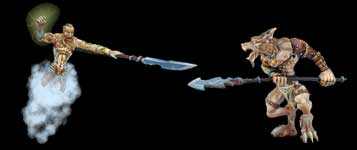

|
Les combats sont l'occasion pour une seigneurie d'augmenter ses acres. C'est l'une des actions les plus difficiles
à réaliser dans le monde de HainyaH car une attaque mal planifiée peut mettre en péril
l'équilibre de votre seigneurie et même provoquer sont
effondrement total. Vous avez la possibilité d'effectuer un maximum de 3 attaques simultanément.
Il est donc important de bien gérer les ratios d'unités militaires que vous utiliser pour chacune des attaques. Voici les principes généraux et les conseils pratiques à tenir compte avant de se lancer dans une aventure guerrière. La réussite d'une attaque dépend du rapport de force déployé par le seigneur attaquant par rapport à la défense de l'ennemi. Il est important d'utiliser tout ce donc vous disposez pour vous informer sur la défense de votre ennemi.  |
|